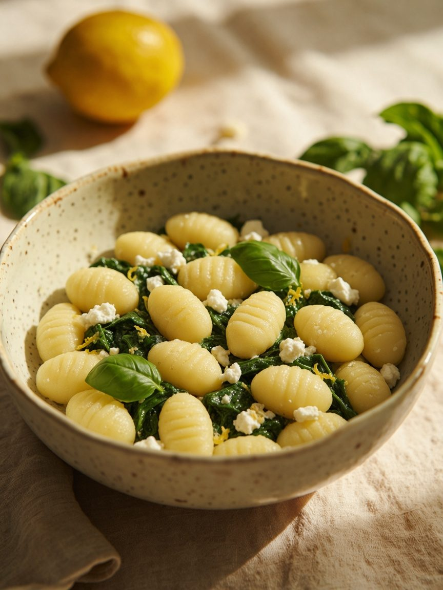
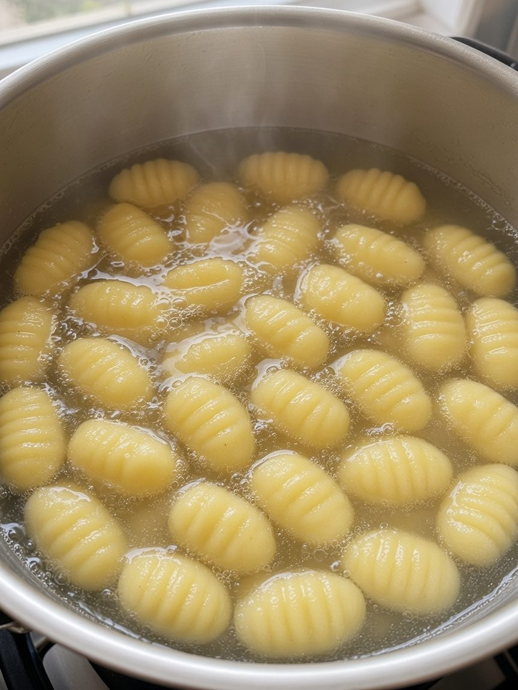
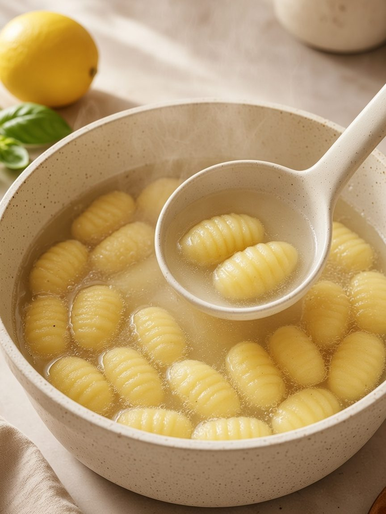
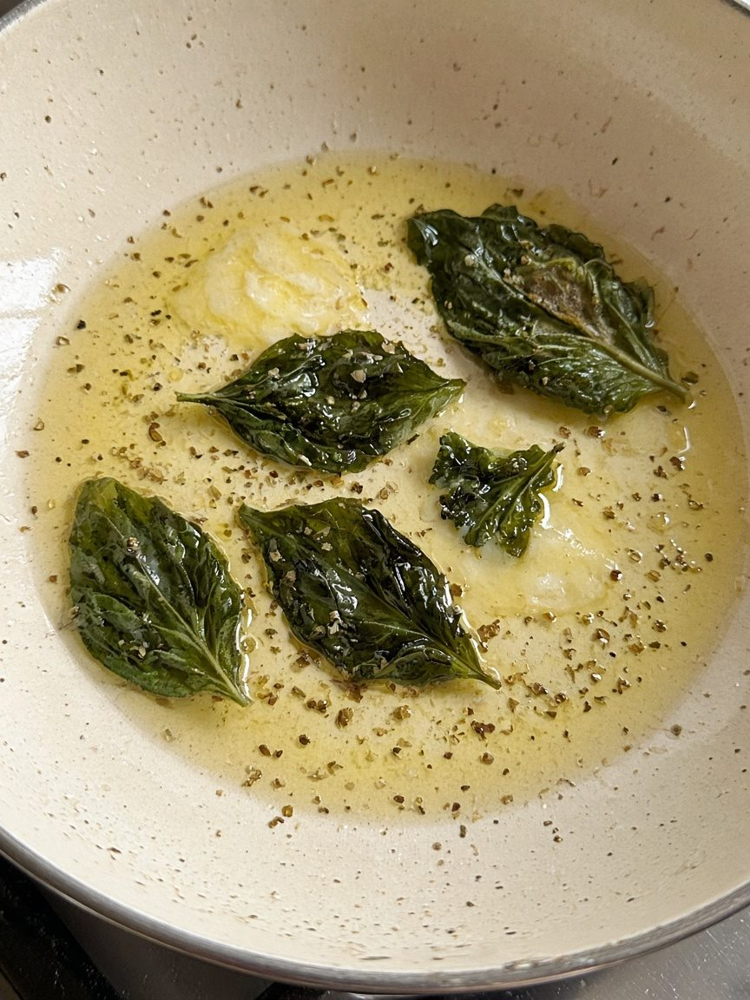
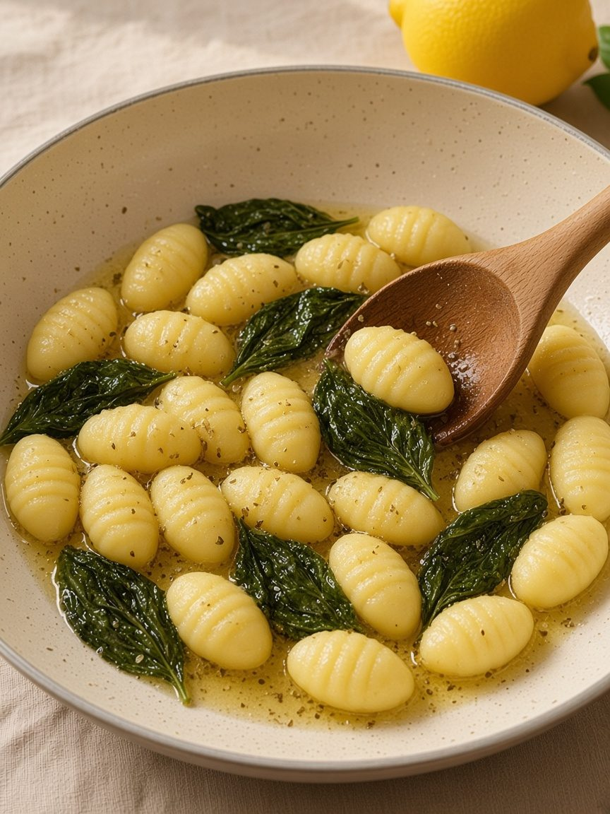
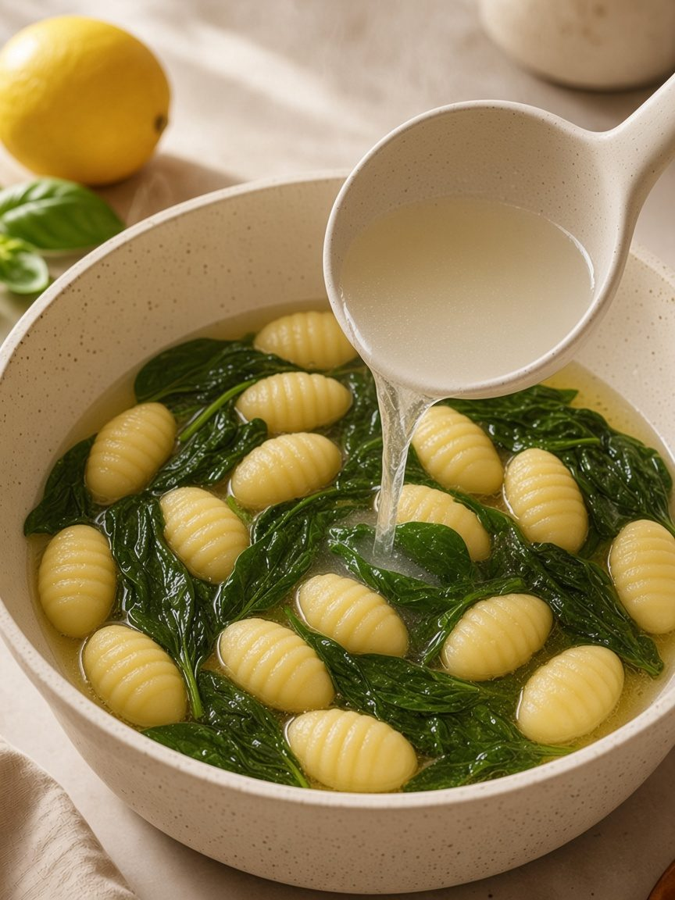
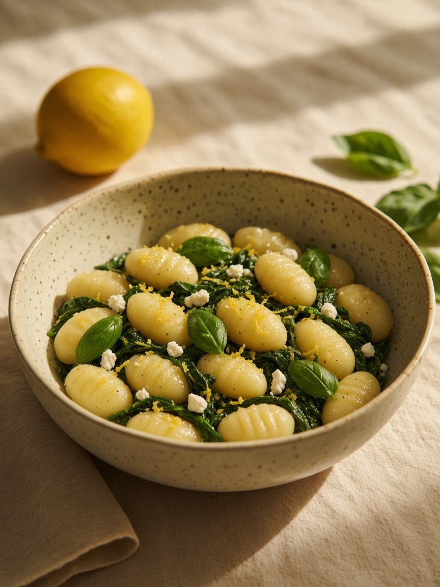

Keep the 40g of cooking water before you drain. It goes back into the pan at the end.
Meditation · Cooking Meditation

Lemon Basil Gnocchi
Eat it fresh 🥡
Reheat gently 🔥
A quiet fold. Bright, green, and warm.
Shopping list
Check off what you already have. Amounts are for 1–2 servings. Plant-based, with no garlic or onion.
Main
Sauces & seasonings
Step 1
Let the water heat slowly. Boil 200g gnocchi in salted water until they float, about 2 minutes. Keep 40g of the cooking water.


🟡200gGnocchi
💧40gCooking water
Step 2
Warm 15g olive oil and 15g plant butter. Add 3g basil and 2g oregano, and let them smell good.

🫒15gOlive oil
🧈15gPlant butter
🌿3gBasil
🌱2gOregano
Step 3
Fold the gnocchi in gently, with 30g lemon juice and zest, and 40g spinach. In the same step, add 20g cashew cheese, 4g sea salt, and 1g black pepper. Then pour in the 40g of cooking water you kept. Eat it at once.



🍋30gLemon
🥬40gSpinach
🧀20gCashew cheese
⚪4gSea salt
⚫1gBlack pepper
💧40gCooking water
Cashew cheese, sea salt, and black pepper are one step. The cooking water comes after.
Fold gently, so the pillows stay whole. No garlic, onion, or scallion.
How to store it
Eat it at once. If any is left, cool it, seal it, and keep it in the fridge for one day.
How to reheat it
Warm it gently in a pan with a spoon of water. Fold, don't stir hard.
Nutritional information per serving (based on 2 servings). Approximate.
Calories320 kcal
Protein6 g
| Fat | 16g |
| Saturated fat | 3g |
| Carbohydrates | 36g |
| Sugars | 1g |
| Dietary fibre | 3g |
| Sodium | 780mg |